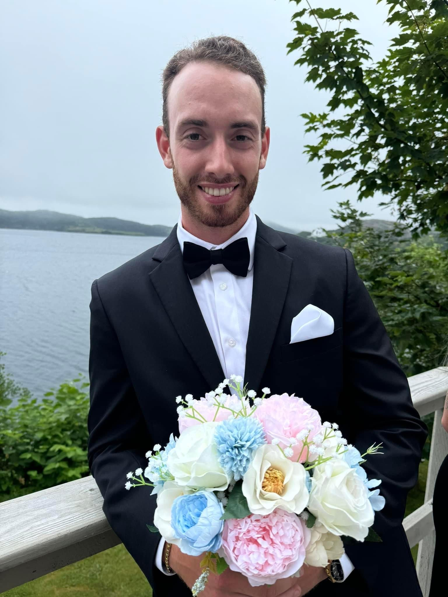
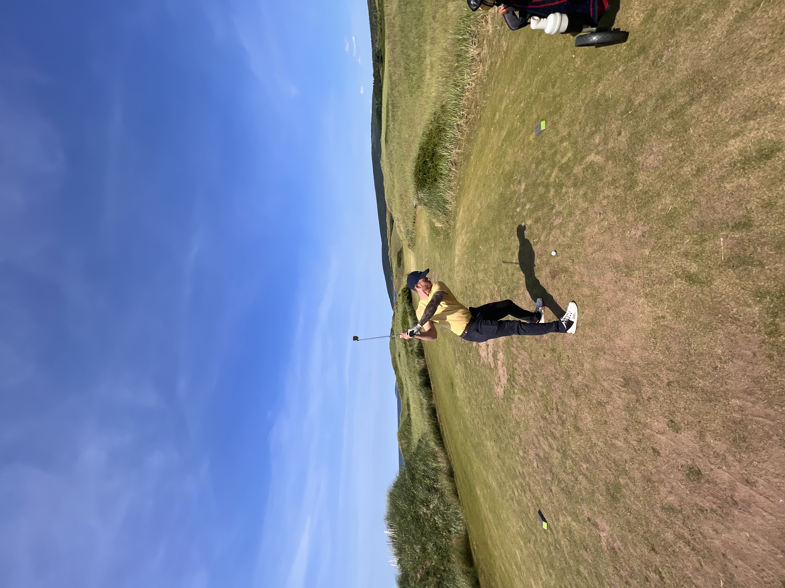
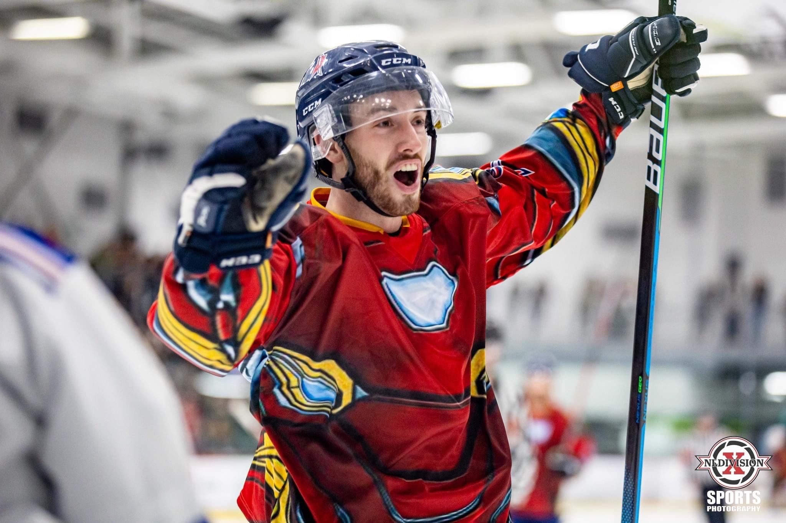

I was born and raised in Paradise, Newfoundland, surrounded by an
amazing family. I earned my Bachelor of Arts degree from Memorial
University of Newfoundland, graduating in 2021 with a major in Police
Studies and a minor in Sociology. Although my initial career path was
to become a police officer, I decided to pivot and pursue my passion
for design and technology. I am now completing a software development
program, set to graduate in 2025, with aspirations to transition into
the field of cybersecurity, while still maintaining an interest in
criminology.
An active lifestyle has always been central to my life. I've
participated in competitive sports, including hockey, baseball,
softball, soccer, and weightlifting. In 2020, I discovered a love for
golf, a sport that quickly became one of my favorites.
I'm also fortunate to have incredible friends who enrich my life. We
share countless experiences together, always supporting one another
through everything. I'm grateful for the life I live and excited for
the journey ahead.